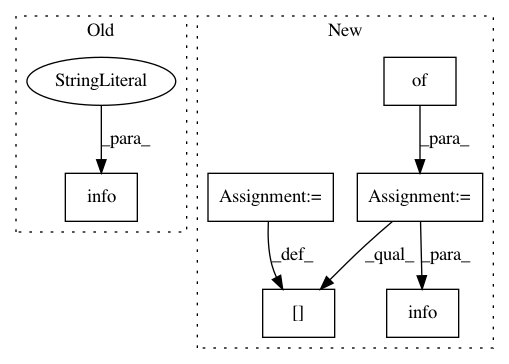

1b1466748f1db72835a594d73d502e9787e080a9,streaming/python/runtime/transfer.py,DataReader,__init__,#DataReader#Any#Any#Any#,282
Before Change
py_input_channels, creation_parameters.get_parameters(),
py_seq_ids, py_msg_ids, timer_interval, is_recreate, config_bytes,
is_mock)
logger.info("create DataReader succeed")
def read(self, timeout_millis):
Read data from channel
Args:
After Change
py_input_channels, creation_parameters.get_parameters(),
py_msg_ids, timer_interval, config_bytes, is_mock)
self.__creation_status = {}
for q, status in queues_creation_status.items():
self.__creation_status[q] = ChannelCreationStatus(status)
logger.info("create DataReader succeed, creation_status={}".format(
self.__creation_status))
def read(self, timeout_millis):
Read data from channel
Args:
In pattern: SUPERPATTERN
Frequency: 3
Non-data size: 6
Instances
Project Name: ray-project/ray
Commit Name: 1b1466748f1db72835a594d73d502e9787e080a9
Time: 2020-09-04
Author: wlx65005@gmail.com
File Name: streaming/python/runtime/transfer.py
Class Name: DataReader
Method Name: __init__
Project Name: tensorflow/benchmarks
Commit Name: 42c5df6f644493cf055d0b2e1a756c946d49c38f
Time: 2019-02-06
Author: donglin@google.com
File Name: perfzero/lib/setup.py
Class Name: SetupRunner
Method Name: setup
Project Name: ray-project/ray
Commit Name: f31ee84bfdc6dc2325c8890412a965e509074d0a
Time: 2020-09-05
Author: wlx65005@gmail.com
File Name: streaming/python/runtime/transfer.py
Class Name: DataReader
Method Name: __init__